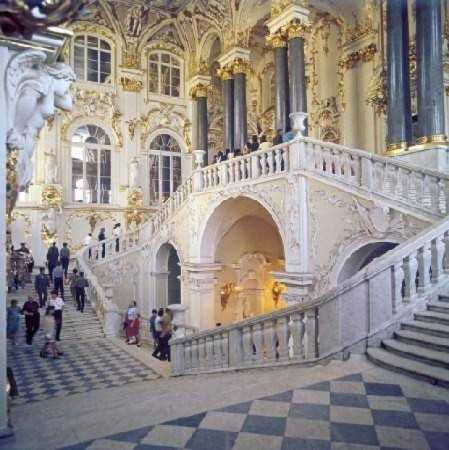
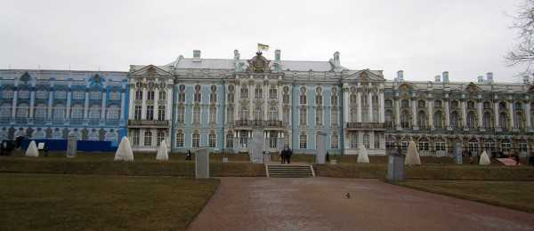
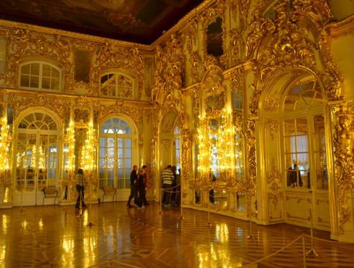

Мое первое путешествие в Санкт-Петербург было самым незабываемым из всех. Этот город на столько волшебный, что ты забываешь о городской суматохе и с головы до ног погружаешься в русскую культуру. На каждом доме в Санкт-Петербурге есть какой-то рисунок или статуя, или вырезка, которые доказывают нам, что Санкт-Петербург — это культурная столица России.

Первое впечатление — набережная около реки Невы. При солнечном свете эта река будто покрыта небесными блестками, что просто невероятно. Красиво выложенный гранит и прочитанное стихотворение А.С.Пушкина «Медный всадник» говорят нам о том, что когда то там в далеком прошлом, именно по этому граниту ходили великие люди, которые не мало сделали для культуры нашей страны.
Второе впечатление — аккуратность и чистота города. За городом активно ухаживают люди. Около какого бы я экспоната не была — везде убрано и все аккуратно подстрижено. Невероятно, но есть ощущение, что за садами и улицами ухаживают не люди, а роботы, которые постоянно поддерживают порядок. Приятно что такие люди еще есть.

Эрмитаж
Первый музей, который я посетил — это Эрмитаж. Великолепные экспонаты в нем просто поражают, кажется что они взяты из волшебной страны. Золотые лестницы, стены — все это на столько красиво, что тебе кажется, что ты попал в дворец Екатерины ||. Там можно ходить вечно, все экспонаты в нем ты не посмотришь за один день.
Больше всего мне понравилось в Царскосельском лицее, в котором как всем известно учился и жил молодой Пушкин.

Все здание прекрасно сохранилось и в нем царит та обстановка, которая была в прошлом. Вы спросите: «Тебе откуда знать какая тогда была обстановка?», но я вам отвечу, что знаю все это по произведениям и рассказам. Когда я увидел маленькую комнатку Пушкина, я очень удивился в каких условиях жил Пушкин. Но именно эти условия сделали его великим.

Так же замечательным местом туристов был Екатериненский дворец. Это было впечатляюще. Этот дворец покорил мое сердце, я никогда не мог бы даже представить, что-то красивее чем это. Так же мне понравился сад около него. Он безумно красивый, убранный. Аккуратно посаженные деревья, 2 зеркальных озера, маленький мостик, цветы, фонтан, камни — все это вместе смотрится как сад королевы, и когда ты туда заходишь, ты понимаешь, что ты сейчас ходишь в том саду, где когда-то ходила сама Екатерина ||!
А еще запоминающимся событием была поездка на теплоходе по реке Неве. Грамотно построенная экскурсия просто завораживает, а особенно блестящая река при солнечном свете и архитектура города. Тебе кажется, что все построенное там, не настоящее, а игрушечное, как будто бы ты спишь. Вот такое путешествие в Санкт-Петербург у меня получилось.